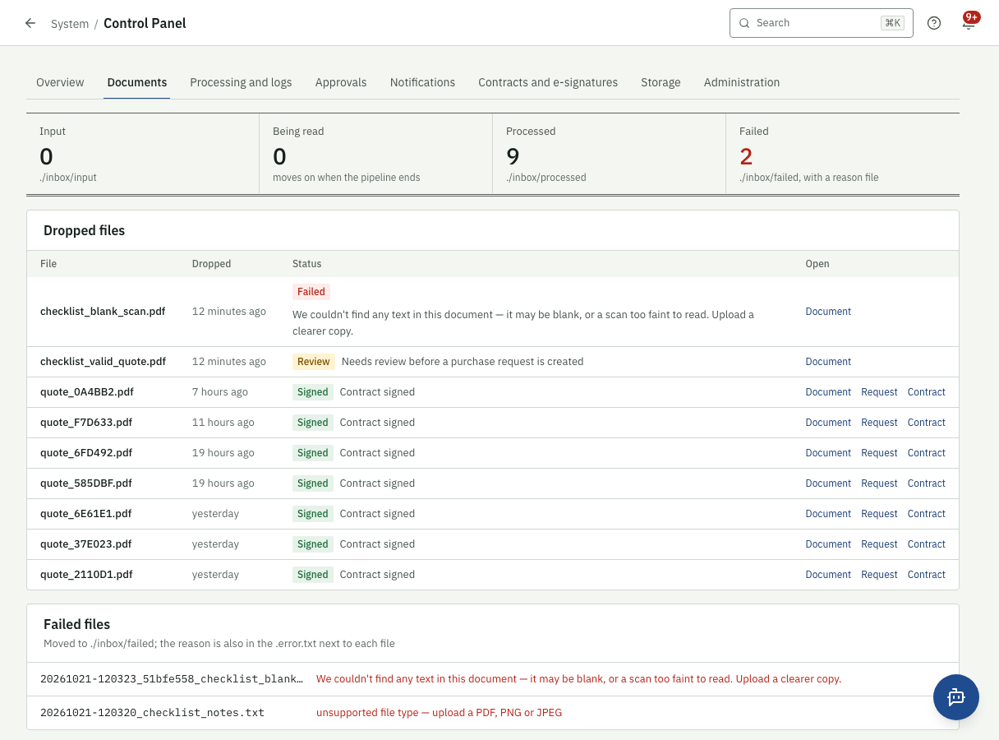
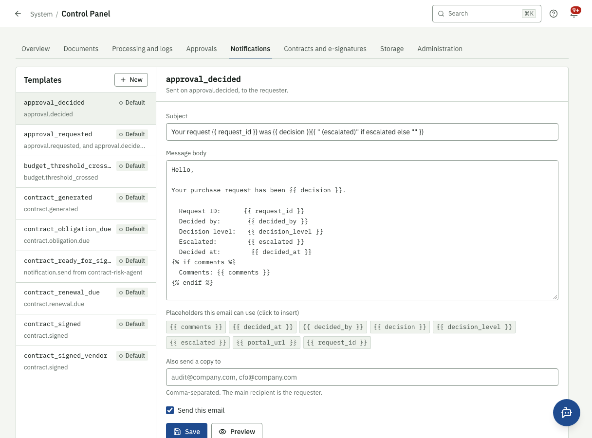
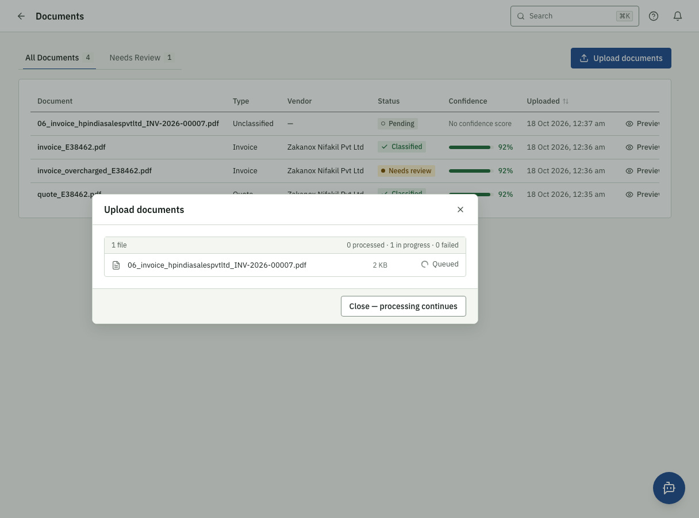
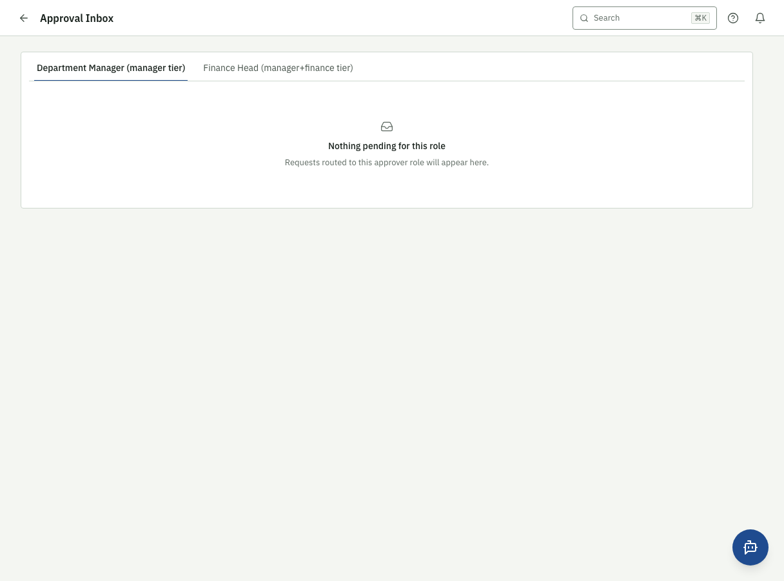
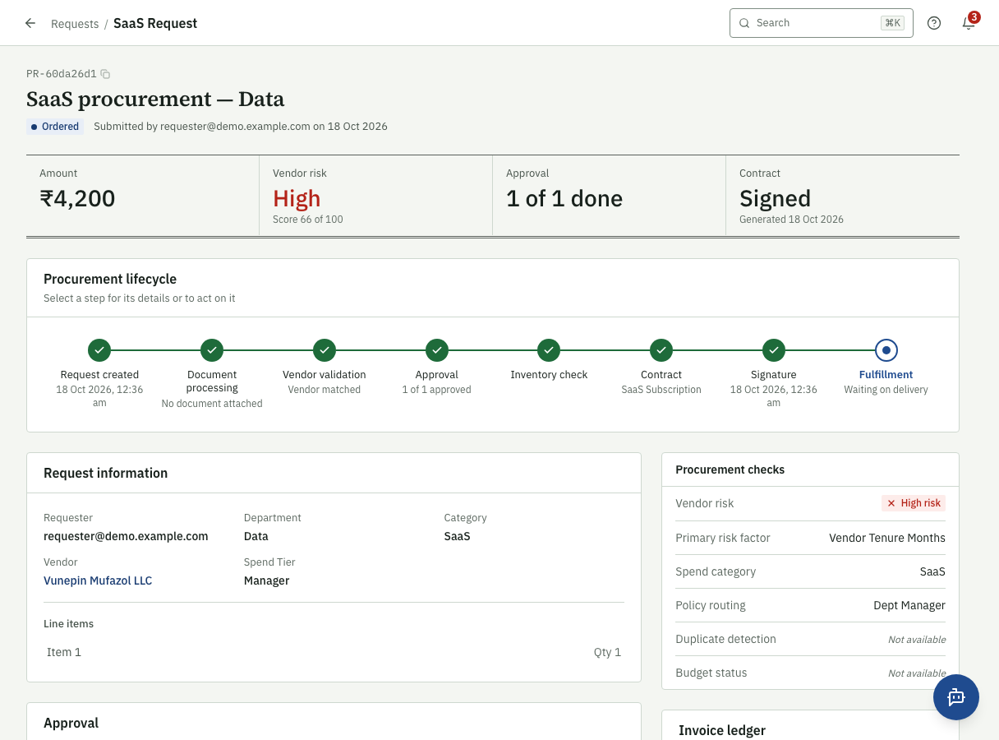
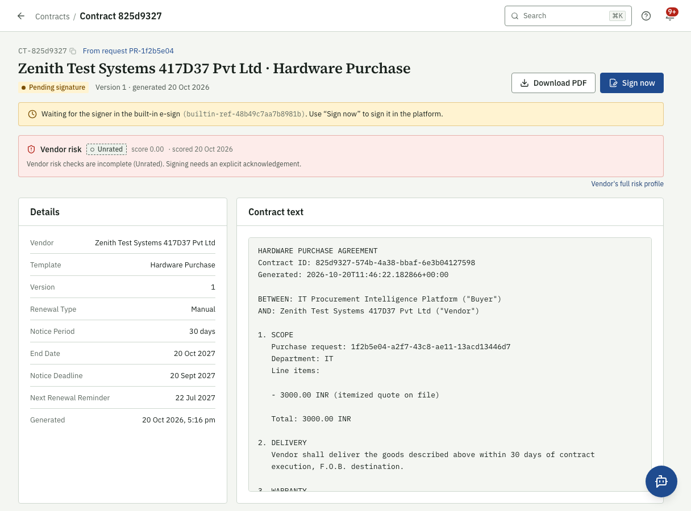
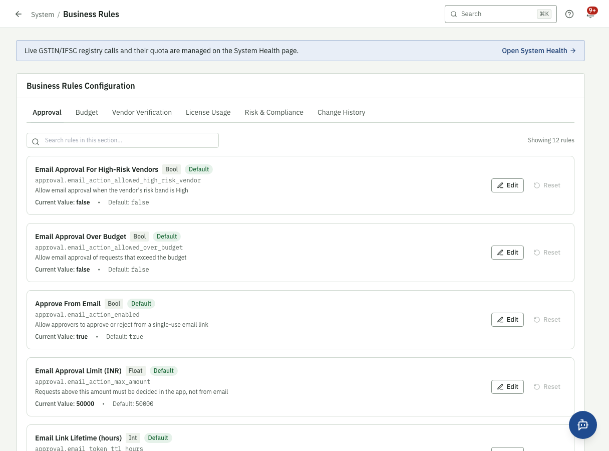

Screens (mockups)¶
Screenshots of the running application, taken by
python tests/e2e/showcase_screens.py from the live stack (so they match
the implemented system, not a design mock-up).
Control Panel¶
 Figure 3. Control Panel → Overview: what is in each folder, waiting for approval
or signature, failed; and the state of the drop folder, Kafka, MinIO and e-signature.
Figure 3. Control Panel → Overview: what is in each folder, waiting for approval
or signature, failed; and the state of the drop folder, Kafka, MinIO and e-signature.

Figure 4. Control Panel → Documents: the three folders, each dropped file's stage and every failure reason.
Figure 5. Control Panel → Notifications: editing an email template without a code change. Figure 6. Control Panel → Contracts and e-signatures: Pending E-Signature / E-Signature Complete with PDF links.
Figure 6. Control Panel → Contracts and e-signatures: Pending E-Signature / E-Signature Complete with PDF links.
Documents¶
 Figure 7. A document's extracted fields, confidence per field and validation results per stage.
Figure 7. A document's extracted fields, confidence per field and validation results per stage.

Figure 8. Documents being read, with live progress.Approvals and contracts¶

Figure 9. Approval inbox for an approver.
Figure 10. A request's lifecycle: approval, contract, signature, delivery, invoice.
Figure 11. Contract page: the vendor's risk is shown before signing.Operations¶
 Figure 12. Control Panel → Processing and logs: every Kafka event, searchable.
Figure 12. Control Panel → Processing and logs: every Kafka event, searchable.

Figure 13. Business rules, edited live with history.